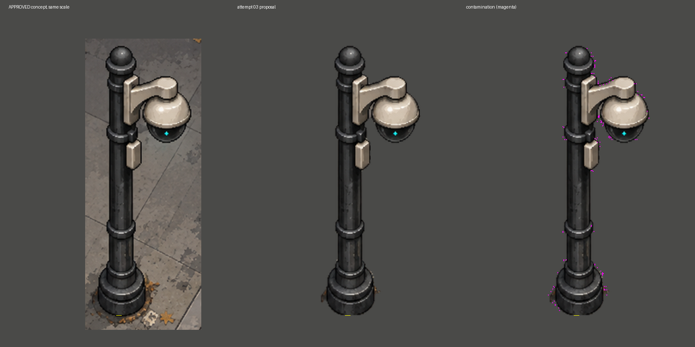
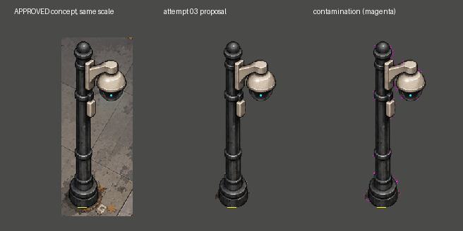
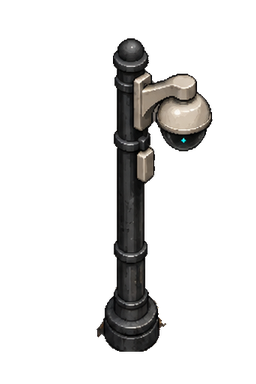
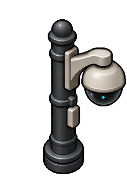
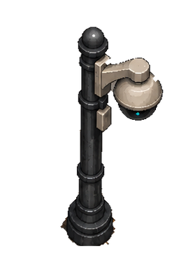
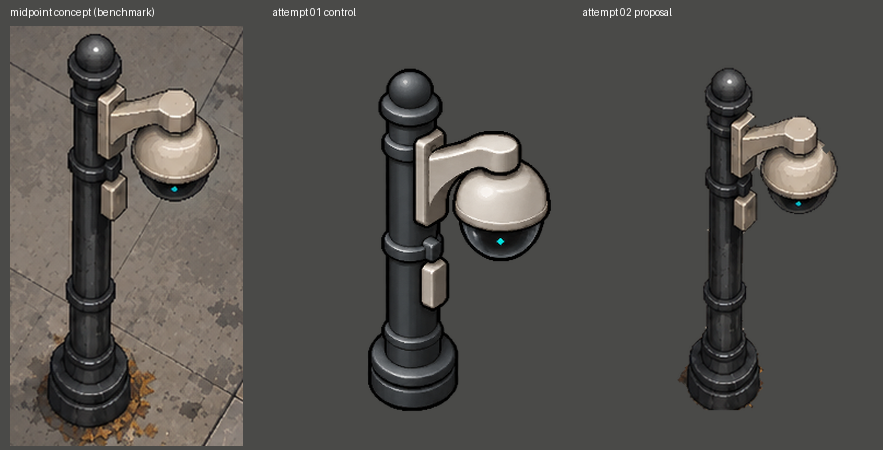

Attempt03 also REJECTED, November16 04:44:17UTC: “still not at benchmark.” No current candidate is recommended. All three attempts are history only. The precise scope of the latest feedback is not yet clarified; do not assume Camera-only feedback or infer a specific defect from passing technical tests.
REJECTED for benchmark fidelity, November16 04:22:37UTC. The owner rejected the latest sample. Matching an alternate midpoint concept does not establish a match to the unchanged approved benchmark. Attempt01 and02 remain comparison history only. This page shows source PNGs, not native renderer captures.
The attempt02 recommendation is withdrawn. Rework must use the original approved benchmark, without treating the selected ground transform as a new art reference. Damage states and the six clips / sixteen frame slots remain gated, not delivered by these intact samples.
Left: approved concept crop (sha 49aa3544…6cb69ffb), put through the identical uniform scale 0.7524 and anchor placement. Middle: attempt03, an exact-RGB extraction with no repaint. Right: contamination in magenta, 4 leaf px and 107 pavement-grey edge px, recomputed by the tests. Visible base debris remains. No match is claimed.






Ground anchor remains (32,88) on the64×96 logical canvas. Concept-to-Player scale, shared-scene contact, damage readability and renderer integration remain unverified. Layer boundaries are visual masks, never collision or field authority.
Reproduction and evidence limits · Attempt03 provenance · Attempt01 provenance (rejected) · Attempt02 provenance (rejected)